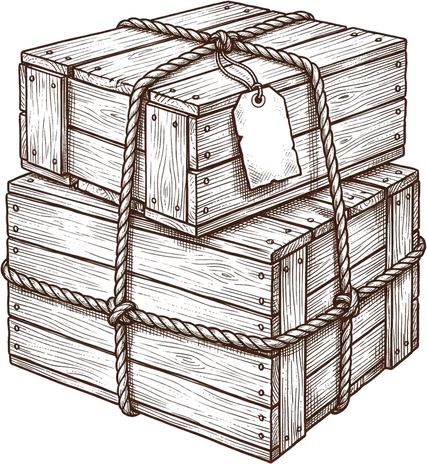

Cross-border procurement platform
US importers source from India over spreadsheets, email and WhatsApp, with no audit trail and no view of the factory floor. A static purchase order never matches production, so one missing customs document can hold a whole shipment. I mapped the journey in five stages and found the white space nobody owns: Flexport runs logistics, Alibaba runs discovery, the big ERPs run finance, but the middle from PO to shipment is empty. I scoped an MVP for that middle: shared PO collaboration, milestone updates with photo proof, an auditable change history and a customs-doc checklist that hands straight to the freight forwarder.
A competitive teardown of Flexport, Alibaba and Coupa, a five-stage journey map and a prioritised MVP.Read the full case study